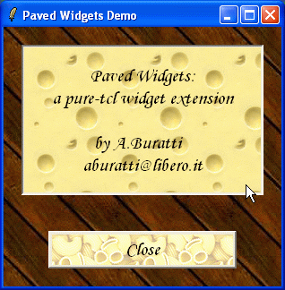
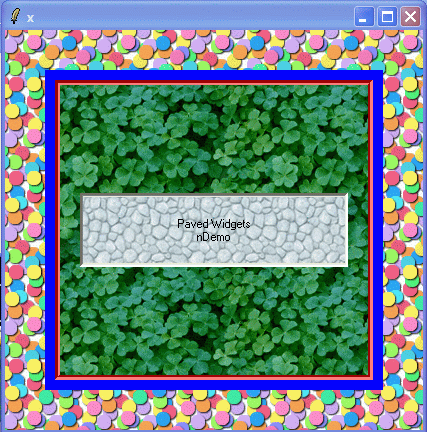
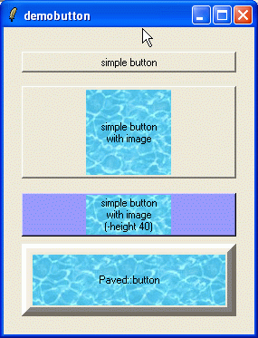
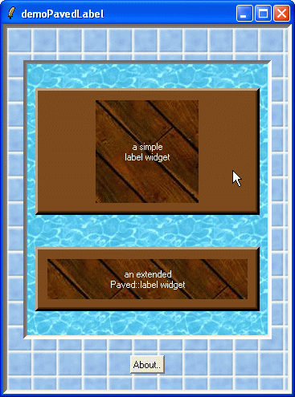
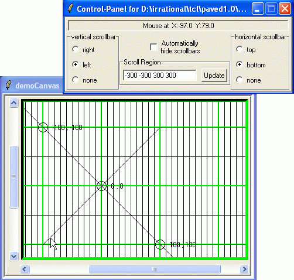
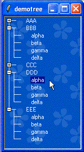
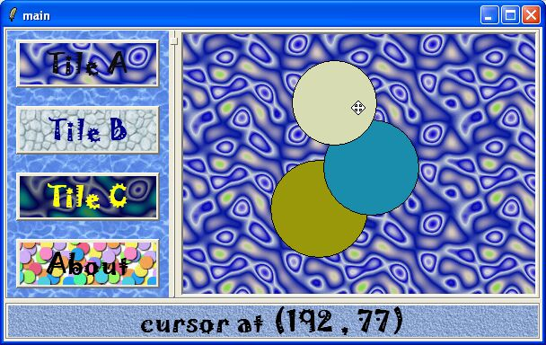

Paved is a collection of standard widgets enhanced with background-tessellation capability (tiling).
Paved widgets are:
These widgets have been inspired by the BLT package. Paved-widgets are pure-tcl widgets requiring the (pure-tcl) snit package.
For detailed info about each widget, read the related paveXXX.html document.
Starting from release 1.1 you can also transform pre-existing widgets in Paved-Widgets.
NOTE: Paved::widgetAdaptor command is deprecated ; use the new "Paved::widget adapt" command
All Paved-widgets can be 'preloaded' with a single command:
package require Paved
# or you can preload just a single widget:
package require Paved::button
# CREATING A NEW PAVED-TOPLEVEL
Paved::toplevel create .z1 -tile xyz.gif
# or
Paved::toplevel .z1 -tile xyz.gif
# ADAPTING AN EXISTING WIDGET -- OLD (DEPRECATED)
# create a standard toplevel
toplevel .z2 -bg red
Paved::toplevelAdaptor .z2 -tile xyz.gif
# ADAPTING AN EXISTING WIDGET -- NEW (RECOMMENDED)
toplevel .z3 -bg red
Paved::toplevel adapt .z3 -tile xyz.gif






All widgets together

# All Paved-widgets can be 'preloaded' with a single command:
package require Paved
# or you can preload just a single widget:
package require Paved::button
# here is a small example:
# (suppose xyz.gif is in current directory)
package require Paved::frame
Paved::frame .c -tile xyz.gif -borderwidth 10 -relief sunken
pack .c -fill both -expand true
wm geometry . 200x200
Run files in demo directory ..
We hope the included demos let you appreciate the Paved-widgets capabilities.
Paved 1.2 and all the required packages should be installed under standard library path.
Currently, if an error occurs when adapting a widget (example: using a wrong option), then the original widget is destroyed !
Example: When adapting an existing canvas (or any other kind of widget), if file "xyz.gif" could not exist, it is suggested to replace the command:
Paved::canvas adapt $c -tile xyz.gif
with
Paved::canvas adapt $c $c configure -tile xyz.gif
In this latter case, the original canvas is transformed in a paved-canvas (though "$c configure -tile .." fails).
In the former case, if "xyz.gif" does not exist, the whole command fails, and the original canvas is lost!
Copyright (c) 2004-2012 <Irrational Numbers>
For comments and suggestions, please write to : <aldo.w.buratti@gmail.com>